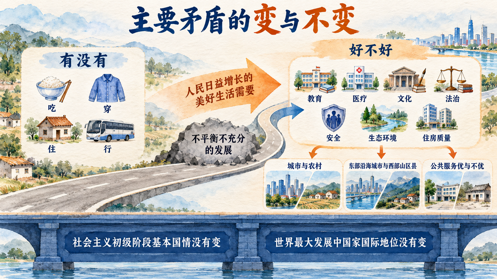
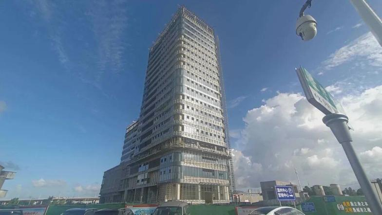

“新时代”是一项政治判断
日常语言中的“新时代”有时只是表示某种新技术或新潮流出现。教材中的“中国特色社会主义新时代”具有严格的政治内涵，它是在长期奋斗基础上，根据我国社会主要矛盾、党的主要任务以及中国与世界关系的新变化作出的历史方位判断。理解它，不能只找一个年份或一个经济指标，而要把阶段性变化放入中国特色社会主义发展进程中考察。
本节依次回答三个问题：新的历史方位依据什么作出，社会主要矛盾变化怎样改变治理重点，新时代伟大变革为什么具有里程碑意义。
一、中国特色社会主义新时代是我国发展新的历史方位
“历史方位”说明党和国家事业发展到了什么阶段、面临什么任务以及同世界形成什么关系。中国特色社会主义进入新时代，是长期以来特别是党的十八大以来党领导人民不懈奋斗的必然结果，标志着中国特色社会主义事业进入新的发展阶段。这一判断既包含已经取得的基础，也包含尚未完成的任务。
从事业发展看，新时代承前启后、继往开来，要在新的历史条件下继续夺取中国特色社会主义伟大胜利；从国家目标看，它连接全面建成小康社会与全面建设社会主义现代化强国；从人民生活看，它指向不断创造美好生活、逐步实现全体人民共同富裕；从民族复兴看，它处在中华民族从站起来、富起来到强起来的历史进程中；从世界关系看，中国发展同世界发展的联系更加广泛深入，也要为人类作出更大贡献。
这五个方面不能被简化为“五件同时发生的事情”。它们共同说明新时代仍然属于中国特色社会主义发展进程，其根本方向没有改变，但事业所处阶段、目标任务和内外条件出现了具有全局意义的新特点。因此，教材强调，这个新时代是中国特色社会主义新时代。
二、社会主要矛盾变化是关系全局的历史性变化
社会生活中存在许多矛盾，主要矛盾是各种社会矛盾的主要根源和集中反映，在一定阶段居于主导地位。抓住主要矛盾，不是说其他问题不重要，而是要识别制约全局的关键关系，以重点突破带动整体发展。社会条件发生变化，主要矛盾也可能转化；判断失准，中心任务和政策着力点就可能偏离实际。
改革开放后，我国社会主要矛盾被概括为人民日益增长的物质文化需要同落后的社会生产之间的矛盾。经过长期发展，社会生产力水平总体显著提高，长期存在的短缺经济和供给不足状况发生根本性改变；人民需要则从基本物质文化需要扩展到民主、法治、公平、正义、安全、环境等方面，并呈现多样化、多层次、多方面特点。党的十九大据此作出判断，我国社会主要矛盾已经转化为“人民日益增长的美好生活需要和不平衡不充分的发展之间的矛盾”。
“不平衡”强调区域、城乡、领域和群体之间存在失衡，局部短板会制约整体发展；“不充分”强调发展质量、效率和潜力尚未充分释放，全面实现社会主义现代化仍有很长的路要走。相应的治理重点也从主要解决“有没有”，进一步转向在继续推动发展的基础上解决“好不好”“均不均衡”“是否可持续”。这要求提升发展质量和效益，更好满足人民在经济、政治、文化、社会、生态等方面的需要。
主要矛盾发生变化，并不等于我国所处历史阶段发生改变。我国仍处于并将长期处于社会主义初级阶段的基本国情没有变，我国是世界最大发展中国家的国际地位没有变。前者要求政策回应新的需要和问题，后者要求坚持从实际出发，既不能落后于时代，也不能脱离实际、超越阶段。
参考资料｜我国社会主要矛盾判断的历史演进
社会主要矛盾的判断始终同一个时期的现实基础和中心任务相联系。1956 年社会主义改造基本完成后，党的八大指出，国内主要矛盾已经不再是工人阶级和资产阶级的矛盾，主要表现为人民对于建立先进的工业国的要求同落后的农业国现实之间的矛盾，以及人民对于经济文化迅速发展的需要同当前经济文化不能满足人民需要状况之间的矛盾。这一判断指向保护和发展生产力、推进国家工业化。
1981 年《关于建国以来党的若干历史问题的决议》在总结新中国成立以来正反两方面经验的基础上，明确我国所要解决的主要矛盾是人民日益增长的物质文化需要同落后的社会生产之间的矛盾，并据此强调党和国家工作的重点必须转移到以经济建设为中心的社会主义现代化建设上来。此后，围绕发展社会生产力、改善人民生活形成了长期稳定的工作主线。
2017 年，党的十九大根据生产力发展和人民需要的变化，作出新时代我国社会主要矛盾的新判断。三次判断的表述不同，说明党根据实践发展认识和把握阶段性特征；它们又都以中国实际为依据，通过识别主要制约因素确定中心任务。三次判断共同表明，主要矛盾的“变”发生在社会主义初级阶段内部，我国仍处于并将长期处于社会主义初级阶段的基本国情没有变，我国是世界最大发展中国家的国际地位没有变。
资料来源：《中国共产党第八次全国代表大会关于政治报告的决议》，1956 年 9 月 27 日；《关于建国以来党的若干历史问题的决议》，1981 年 6 月 27 日；习近平《决胜全面建成小康社会 夺取新时代中国特色社会主义伟大胜利》，2017 年 10 月 18 日；《中共中央关于党的百年奋斗重大成就和历史经验的决议》，2021 年 11 月 11 日。

案例研究｜浙江共同富裕示范区：把主要矛盾转化为治理任务
2021 年，中共中央、国务院支持浙江高质量发展建设共同富裕示范区。设立示范区的直接问题意识十分明确：我国发展不平衡不充分问题仍然突出，城乡区域发展和收入分配差距较大，不同地区推进共同富裕的基础和条件又不相同，需要选择有基础、有差异也有改进空间的地区先行先试。
这项实践并没有把共同富裕等同于平均分配，也没有把任务缩减为提高一个收入数字。中央文件把高质量发展作为物质基础，把解决地区差距、城乡差距、收入差距作为主攻方向，同时把公共服务、精神文化、生态环境和社会治理纳入美好生活。浙江的措施由此形成几条相互联系的路径：通过创新和产业升级提高发展质量，通过就业优先和收入分配制度改革增强居民增收能力，通过城乡融合和“山海协作”缩小区域差距，通过教育、医疗、养老、住房和社会保障建设促进基本公共服务均等化，再通过数字化改革和基层治理提高公共服务的可及性。
以“山海协作”为例，沿海发达地区同山区县建立产业、园区、人才和公共服务合作，不只是一次性转移资源，而是帮助相对欠发达地区形成内生发展能力。以就业增收为例，政策同时关注扩大就业容量、提高就业质量、技能培训和低收入群体帮扶，说明收入改善要建立在劳动能力、产业机会和制度保障之上。以公共服务为例，县域医共体、城乡教育共同体和社会保障衔接试图减少居住地点、户籍和收入差异带来的机会落差。
“研发孵化在鹿城、产业落地在泰顺”怎样运转
浙江的山区县与沿海发达地区在区位、产业基础和要素集聚能力上存在差异。如果协作只是一次性拨款，资金使用结束后，山区县仍可能缺少持续吸引企业、人才和技术的条件。鹿城区与泰顺县的协作提供了一个观察“造血”机制的具体场景：双方建设鹿泰总部科创园，并探索科创“飞地”。企业可以在温州市区开展研发、孵化和市场对接，再把适合的生产环节落到泰顺，形成“研发孵化在鹿城、产业落地在泰顺”的分工。
浙江省经济信息中心发布的材料记载，鹿泰总部科创园由两地共同投资、共同运营。泰顺提供土地指标、建设资金并负责建设管理，鹿城支持项目选址、企业招引和收益保障。当地还把村级集体经济纳入合作：311 个村集体以总额 1.15 亿元参与投资，形成的物业和经营收益为村集体提供较稳定的收入来源，材料称每个村集体平均每年增收 5 万元。这里的协作不只移动资金，还把区位、园区、招商能力、产业项目和村集体收益机制组合起来。

这个具体实践说明，缩小区域差距需要创造持续发展的条件。科创“飞地”利用发达地区接近人才、资本和市场的优势，为山区县承接项目建立入口；生产环节落地又把就业、税源和产业能力带回山区。村集体参与投资，则把园区发展同乡村集体收益联系起来。区域协作由此从简单的资源转移，转向不同地区优势互补、收益共享和能力共同提升。
阶段性数据可以观察部分结果。浙江官方公布，2025 年全体居民人均可支配收入为 70240 元；城镇和农村居民人均可支配收入分别为 81649 元和 45154 元，城乡居民人均收入倍差为 1.81，比上年缩小 0.02；城镇新增就业 115.8 万人。
这个案例把社会主要矛盾转化为可分析的政策链条：美好生活需要更加广泛，发展不平衡不充分构成主要制约，因此治理既要继续发展生产力，也要调整机会、分配和公共服务结构。
讨论题
- 为什么共同富裕不能简单理解为把现有收入平均分配？浙江案例还处理了哪些发展条件？
- “山海协作”如果只进行一次性资金转移，为什么可能难以形成持续效果？产业、人才和公共服务协作分别解决什么问题？
- 如果你毕业时面对省会城市和山区县两个工作机会，哪些产业、公共服务和发展机会会影响选择？这同区域协调发展有什么关系？
资料来源：《中共中央、国务院关于支持浙江高质量发展建设共同富裕示范区的意见》，2021 年 5 月 20 日；浙江省经济信息中心，《推动山区 26 县跨越式高质量发展 鹿城泰顺：“山海协作”结硕果》，2023 年 2 月 15 日；浙江省经济信息中心，《同比增长 5.5%！2025 年浙江经济运行情况公布》，2026 年 1 月 23 日。
新闻摘录｜世界银行观察消费、就业与技术转型
世界银行在 2025 年 6 月发布的中国经济简报新闻稿中指出，2025 年第一季度中国实际国内生产总值同比增长 5.4%，政策支持促进了消费，也推动主要城市住房销售回升；与此同时，消费增长仍然偏弱，低线城市房地产市场仍面临困难，制造业投资和出口受到全球贸易政策不确定性的影响。该机构当时预测，外部限制和不确定性将影响出口、制造业投资和招聘，财政政策可以通过基础设施支出、补贴和社会保障缓冲下行压力。
报道把居民消费同社会保障联系起来。世界银行中国、蒙古和韩国局局长 Mara Warwick 认为，在内外部挑战下，家庭消费对于保持增长十分关键；除短期刺激外，加强社会安全网，尤其是改善农民工和临时劳动者的保障，可以提高家庭的财务安全感，减少预防性储蓄需要，从而支持消费。
新闻还关注经济增长与就业创造之间联系减弱的问题。报道援引经济简报称，中国过去五年净增就业 2100 万个，不到此前五年的一半；建筑业和服务业就业增长放缓，工业就业则在政策支持等因素作用下增加。自动化、人工智能和数字化正在改变劳动需求，一些低技能岗位减少，高技能人才机会扩大，非正规就业者、流动劳动者和临时劳动者因就业稳定性和社会保障较弱而面临更大挑战。世界银行中国首席经济学家 Elitza Mileva 据此提出，应同时运用宏观政策和结构性改革，改善民营部门创造就业的环境，有针对性地投资技能发展，并加强社会保障覆盖。
讨论题
- 为什么国内生产总值增长、居民消费和美好生活需要不能相互替代？
- 自动化和人工智能改变岗位结构时，哪些问题属于个人技能选择，哪些问题需要就业、教育和社会保障政策共同回应？
- 用社会主要矛盾分析这则新闻，能够补充世界银行分析中的哪些问题层次？
资料来源：世界银行《释放消费潜力，保持中国经济增长：中国经济简报》，2025 年 6 月 13 日。以上为新闻稿相关段落的中文翻译与删节。
三、新时代伟大变革及其里程碑意义
判断一个时代的变革，既要看成就，也要看它解决了什么长期积累的问题、形成了什么制度和物质基础。党的十八大前，改革开放和社会主义现代化建设已经取得巨大成就，同时党的领导和党的建设、经济发展方式、法治建设、民生保障、资源环境等方面仍有一系列突出矛盾和问题。新时代伟大变革正是在应对这些问题的过程中形成的。
教材从党的领导和全面从严治党、经济发展、改革开放、民主法治、文化建设、民生和社会治理、生态文明、国防军队、国家安全、“一国两制”和祖国统一、外交等方面展开历史性成就与历史性变革。这里不能把若干成就简单相加。它们共同说明，党的领导制度体系、国家治理体系、发展方式、人民生活和中国同世界的关系发生了广泛而深刻的变化。
“里程碑意义”要求把新时代变革放进更长历史尺度中理解。对党史而言，它体现党在革命性锻造中更加坚强有力；对新中国史和改革开放史而言，它使现代化建设具有更坚实的物质基础和制度保证；对社会主义发展史而言，它使科学社会主义在 21 世纪中国焕发新的生机；对中华民族发展史而言，实现中华民族伟大复兴进入不可逆转的历史进程。五个尺度从不同角度说明同一场变革的历史位置。
新闻摘录｜WIPO：2025 年中国首次进入全球创新指数前十
世界知识产权组织 2025 年 9 月 16 日发布全球创新指数新闻稿。该指数使用约 80 项指标评估近 140 个经济体的创新表现，指标涉及研发支出、风险资本交易、高技术出口和知识产权申请等。2025 年，中国排名由上一年的第 11 位上升至第 10 位，首次进入前十，并继续在中等收入经济体中保持领先。WIPO 同时指出，中国在研发支出、高技术出口和创新产出方面保持较强势头，在全球百强创新集群中拥有 24 个。
这条消息的意义不仅是名次上升。进入前十表明，中国创新能力在多项投入与产出指标上的综合位置发生变化，也为理解新时代我国科技实力和综合国力提升提供了一个国际比较视角。创新集群数量较多，则提示创新不是单个实验室或企业的孤立活动，而同城市群中的高校、科研机构、企业、人才、资本和产业网络有关。
新闻稿也呈现了全球创新的复杂环境。2024 年全球研发增长降至 2.9%，WIPO 当时预测 2025 年将进一步放缓至 2.3%；企业研发支出实际增速放缓，风险资本交易额虽然回升，但主要受美国巨额交易和生成式人工智能投资推动，全球风险资本交易数量连续第三年下降。由此可见，中国排名提升发生在全球创新投入增速放缓、资本更加集中于人工智能和信息通信技术的背景下。
讨论题
- 中国首次进入全球创新指数前十能够说明什么，不能说明什么？
- 为什么创新产出提高与部分创新投入、基础能力或区域差距问题可以同时存在？
- 如果要判断科技创新是否形成高质量发展的动力，除国际排名外还应观察哪些机制和结果？
资料来源：世界知识产权组织《产权组织 2025 年全球创新指数：瑞士、瑞典、美国、韩国和新加坡位居前列；中国跻身前十；创新投资增速放缓》，2025 年 9 月 16 日。正文依据新闻稿节选并作必要删节。